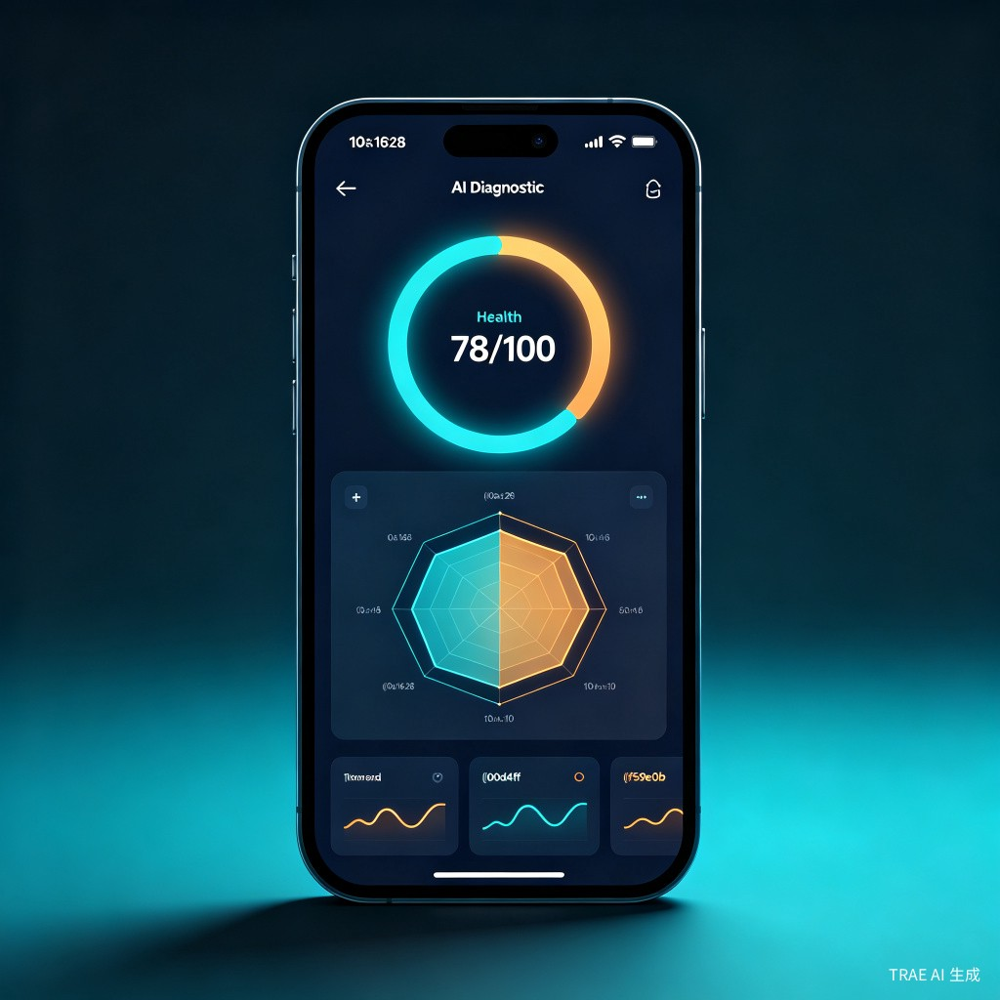
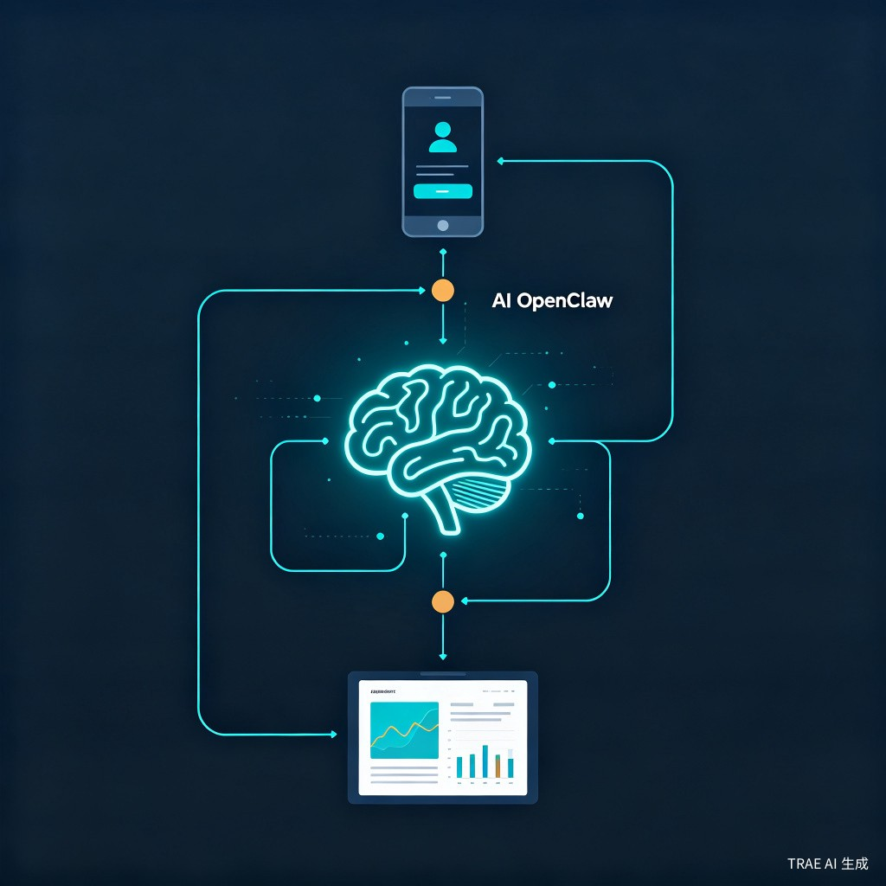

创意介绍
当用户向AI提问"哪个品牌的XX更好"时，AI会如何回答？你的品牌是否被提及、被正确描述、被排在前面？GEO品牌体检官帮你回答这些问题。
随着AI搜索、AI问答和智能推荐逐渐成为用户获取信息的新入口，品牌在AI眼中的认知，会直接影响AI如何介绍、推荐和评价这个品牌。
GEO品牌体检官是一款面向品牌方的小程序，通过豆包API获取品牌在AI回答中的文本结果、品牌提及、推荐逻辑和引用信息源，并以OpenClaw作为系统大脑，结合GEO规则库和结构化诊断逻辑，输出品牌综合评分、10维度体检结果、竞品对比、曝光趋势和优化建议。
品牌方不仅能看到"自己得了多少分"，还能知道"为什么这样打分""依据是什么""应该从哪里开始优化"。
核心功能
围绕10个维度对品牌进行系统性诊断，输出综合评分、各维度得分、扣分原因、评分依据和优化建议，让品牌方清晰感知自身在AI认知中的短板。
持续追踪品牌曝光趋势、竞品对比、综合评分变化、引用信息源排名，帮助品牌方观察优化效果，判断自身在AI推荐生态中的位置。
品牌体检10大维度
使用流程
技术架构

底层能力层，获取品牌在AI问答场景中的回答文本、品牌提及、排序表现和引用信息源。
系统大脑，统筹多轮检测任务、拆解诊断逻辑、调用GEO规则库，综合判断品牌表现。
大量提示词、评分标准和业务判断逻辑，约束输出，提升诊断结果的一致性和可解释性。
产品载体，降低品牌方使用门槛，输入品牌信息即可快速获得结构化诊断报告。
数据展示示例
以下是品牌体检报告中的典型数据可视化展示（模拟数据）。
目标用户与痛点
年销售额3000万以上、开始重视品牌形象的成长型品牌，以及中大型品牌客户。典型角色包括品牌负责人、市场负责人、创始人和数字化增长团队。
品牌方在做季度品牌复盘、竞品分析、新品上市前的品牌认知检查、以及日常品牌健康管理时使用。
品牌方缺少判断品牌在AI场景中表现的工具。传统SEO和舆情监测无法覆盖AI问答和推荐场景，品牌方不知道AI如何理解自己、如何向用户推荐自己。
微信小程序，轻量易用。品牌方输入基础信息和检测目标，即可快速获得一份结构化的品牌诊断报告和趋势数据。
价值与意义
商业价值：GEO品牌体检官帮助品牌方建立面向AI时代的品牌认知管理能力。随着AI搜索和AI推荐逐渐普及，品牌方对GEO检测和优化的需求会持续增长。项目可发展为订阅式SaaS服务。
效率提升：品牌方无需投入大量人力做竞品调研和AI场景测试，通过小程序几分钟即可获得一份系统性的品牌诊断报告，大幅降低品牌数字化管理的成本。
创新点
关注AI时代的新品牌入口
传统品牌检测围绕搜索排名、舆情监测和社交媒体声量，GEO品牌体检官关注的是品牌在生成式AI回答中的认知状态和推荐表现。
多角度综合判断
不是简单做关键词监测，而是从AI回答文本、引用信源、竞品排序、场景关联和情感倾向等多个角度综合判断品牌表现。
强调可解释性
不仅给出分数，还说明为什么这样打分、依据是什么、品牌方应该从哪里开始优化。
低门槛使用
以小程序为载体，用户只需输入品牌基础信息和检测目标，即可快速获得结构化诊断报告。